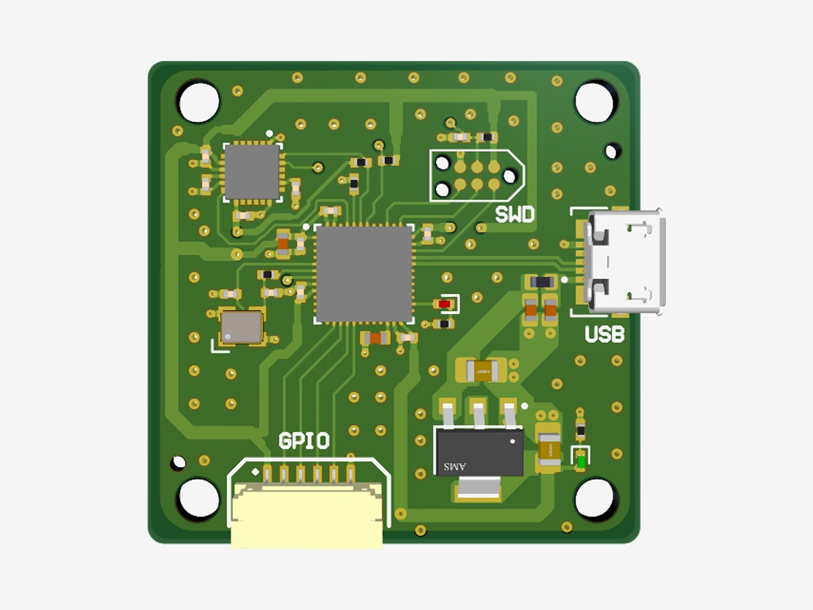
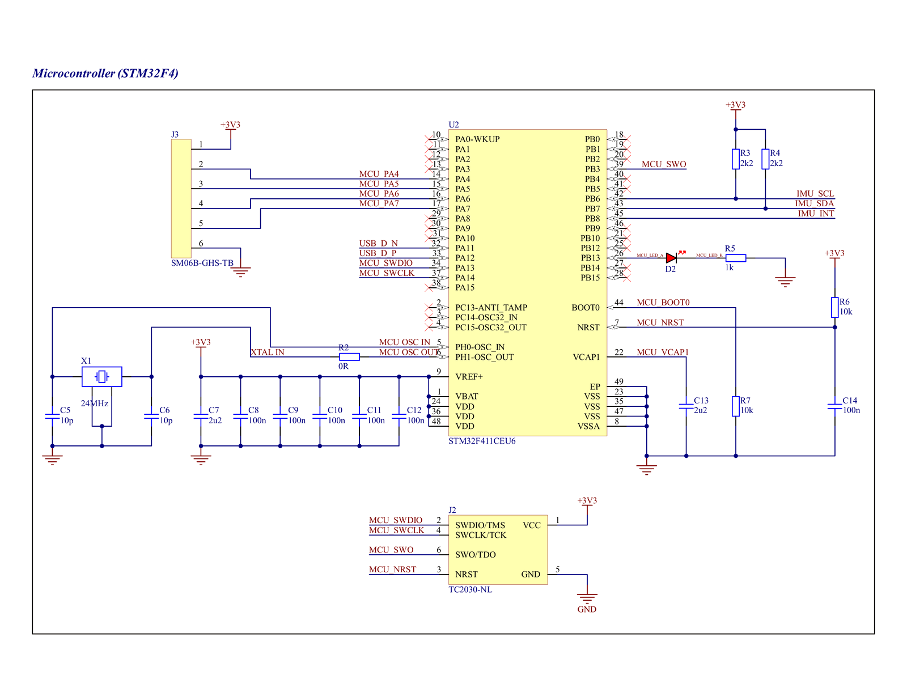
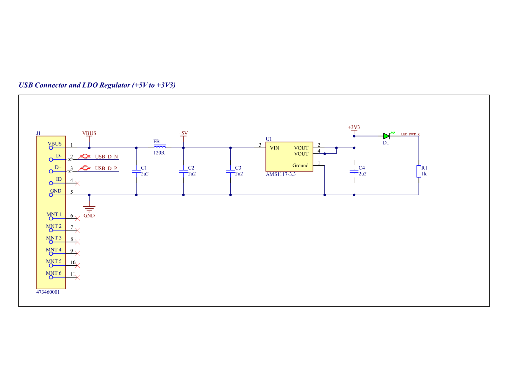
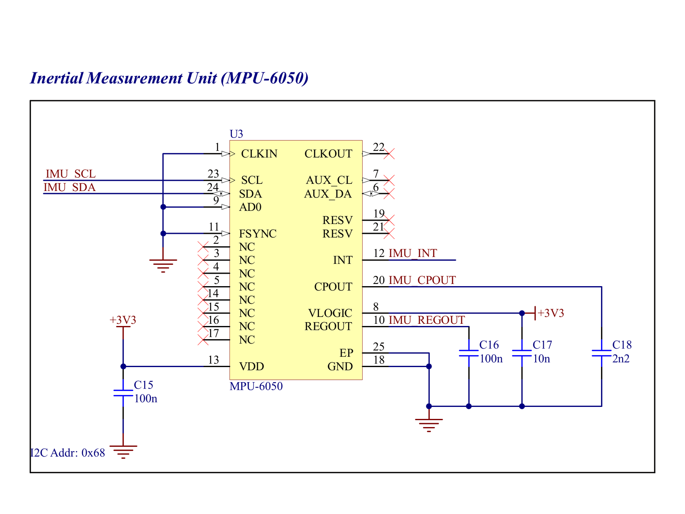
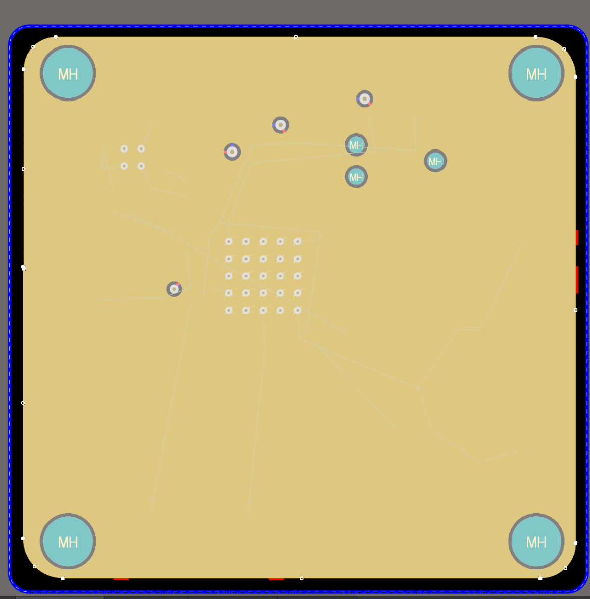
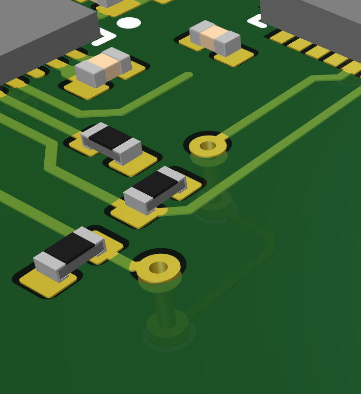
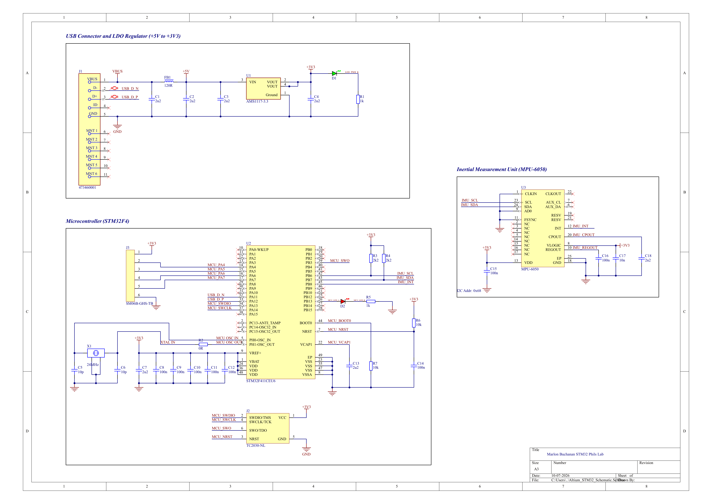
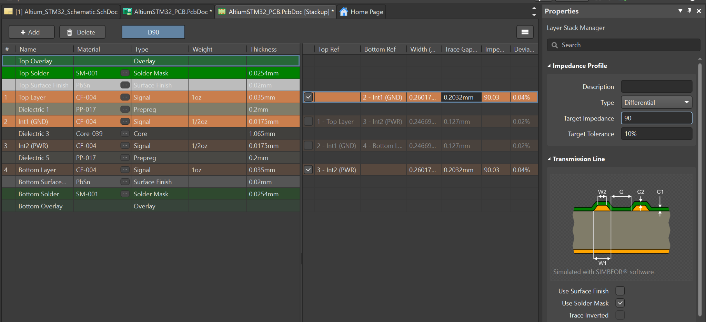

STM32F4 Breakout Board with IMU
My first PCB: a 4-layer design that taught me Altium
My first PCB: a 4-layer STM32F411 board with an MPU-6050 IMU, USB power, and SWD programming. I designed it by following Phil's Lab's STM32 hardware design tutorial and took it all the way to manufacturing outputs.
It was never ordered. Its job was to teach me Altium and the fundamentals of board design, and I used what I learned here on every board after it, including the MPPT converter and the battery charger.
- Role Solo learning project
- When January 2026
- Status Fab-ready (Gerbers, pick-and-place, BOM); not manufactured
- Parts STM32F411CEU6, MPU-6050, AMS1117-3.3, micro-USB, Tag-Connect SWD
- Tools Altium Designer, JLCPCB design rules and stack-up







Highlights
- Designed a 4-layer board (signal / GND / power / signal) matched to JLCPCB's 1.6 mm JLC7628 stack-up, with JLCPCB's design rules imported for manufacturability
- Set up a 90 Ω differential impedance profile and a differential-pair net class for the USB data lines
- Built the power path from USB VBUS through a ferrite bead and filter capacitors to an AMS1117 3.3 V LDO, with a power indicator LED
- Placed parts by priority: decoupling capacitors at the MCU supply pins, then bulk capacitance, the crystal, and I2C pull-ups near the host
- Poured an internal ground plane with stitching vias, and generated Gerber X2, pick-and-place, and BOM files for JLCPCB assembly
Design Process

1. Schematic
The schematic covers the STM32F411, an MPU-6050 IMU on I2C, a 24 MHz crystal, SWD programming, GPIO breakout, and the USB power path.
This is where I picked up good habits I still use: net labels to keep sheets readable, No-ERC markers on unused pins so the checker stays meaningful, 3V3 and 2u2 value notation, and sanity math like sizing the LED resistor for about 3.3 mA.

2. Stack-up and design rules
Before placing anything, I imported JLCPCB's manufacturing capabilities as design rules and copied their 4-layer stack-up into Altium. That set real trace widths for a 90 Ω differential pair on the USB data lines.
It taught me that manufacturability is decided in the rules, not at the end.
3. Placement and routing
I routed the critical paths first: the USB differential pair, decoupling capacitors, and the crystal, then the lower-speed signals like NRST. Power got wider traces (1 mm narrowing to 0.5 mm for 3.3 V), sized to what each branch actually draws.
I checked the 3D view after every placement pass and marked polarity on every footprint so the board would assemble correctly.
4. Ground plane and fab outputs
Layer 2 is a solid ground pour tied to the top-layer grounds with vias, and stitching vias connect the ground planes. I re-poured and re-ran the design rule check until it was clean, then exported Gerber X2, pick-and-place, and a BOM matched to LCSC part numbers.
What I'd change
Add ESD protection on the USB connector before the ferrite bead filter. The tutorial left it out, and I'd put it on any board that's going to be handled.
Skills Used
Schematic Capture
MCU, IMU, USB, and power schematics in Altium with clean net labeling and ERC.
4-Layer PCB Layout
Stack-up definition, impedance-controlled USB routing, ground planes, and via stitching.
Design for Manufacturing
JLCPCB rules, Gerber X2, pick-and-place, and an LCSC-matched BOM.